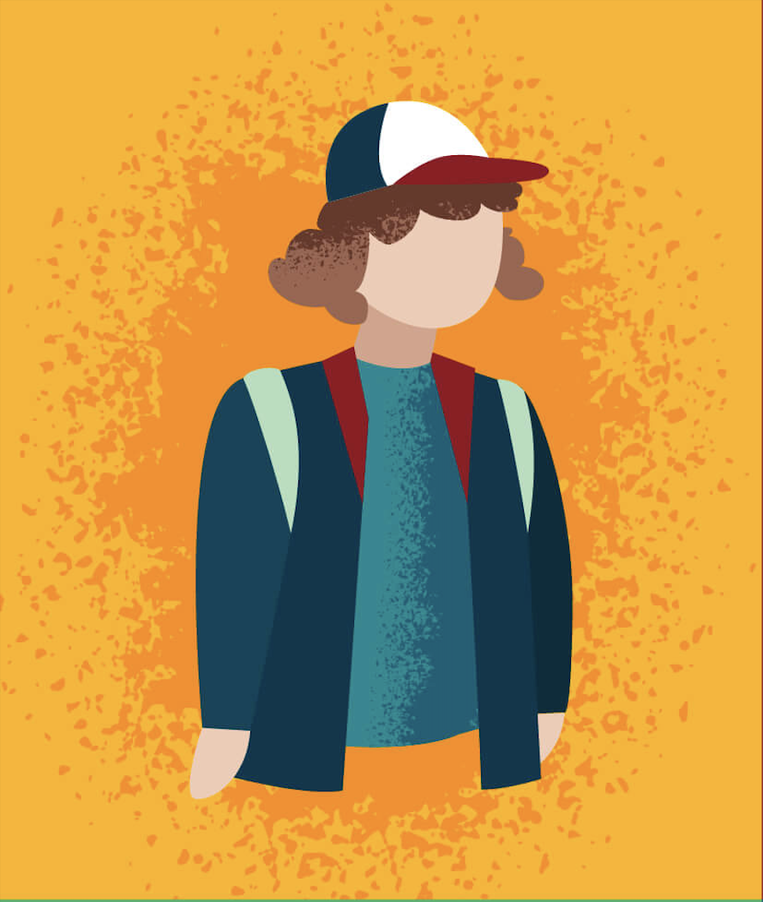

МЕЛАНХОЛИК - быстро утомляем, неуверен в себе, тревожен и мнителен. Хорошо разбирается в оттенках чувств, осторожен и осмотрителен. Скрытен и застенчив, сильно переживает по малейшему поводу. Трудно приспосабливается к новым людям. Сильные стороны – имеет глубокий внутренний мир. Обладает высокой чувствительностью. Хорошо справляется с интеллектуальной деятельностью. Достигает значительных успехов в творчестве. Слабые стороны – чрезвычайно ранимый. Долго и тяжело принимает решения, постоянно сомневается. Податлив по отношению к внешним взаимодействиям.